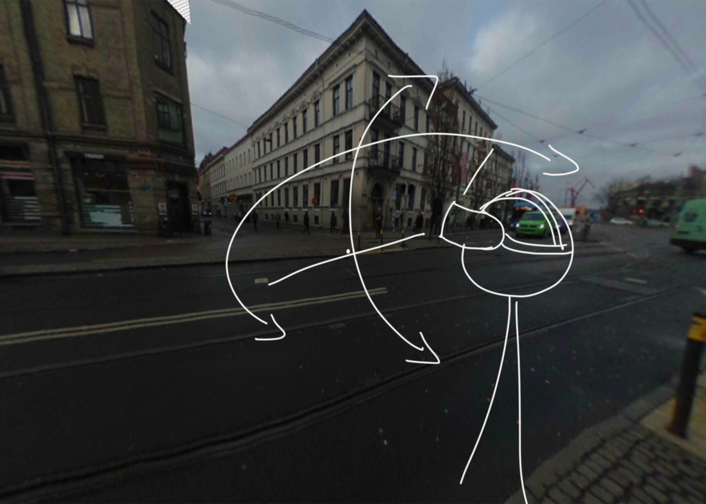
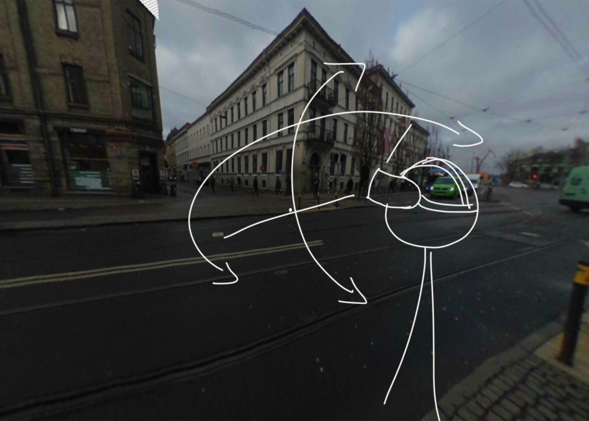

Problem Statement
“What guidelines can help create an immersive and interactive historical tour of a street?”
Virtual Reality UX Design
2018
Feb 2018 - May 2018
What is a biography? It's the story of a person. How did they become the person they are today, the story of their successes and failures. What if we could tell the biography of a street? This project aimed to do just that, through the use of Virtual Reality and historical content, we hoped to show the biography of a street, and in the meantime, demonstrate the effects of both good and bad urban planning. Using this VR prototype, you can go back in different time periods on Linnégatan, a street in the city of Gothenburg, Sweden, and experience the music and sounds of the past. You are also given the opportunity to manipulate history, in order to see what the effects might be in the future.
“What guidelines can help create an immersive and interactive historical tour of a street?”

Since this project was thesis work being done with a company, it followed the exploratory research process which helped formulate the problem and identify the target audience. The exploratory research phase consisted of background study and interviewes with potential users.
The project consisted of four iterations. The first iteration started with background research and user interviews, followed by low fidelity prototype, idea generation and refienemnt, High fidelity prototype's first version, its testing and a second version, its testing. The result was a high fidelity VR prototype and Design guidelines for an immersive expereince for history of urban areas.
The background research let us put hands on the existing research on the urban planning, the involvement of virtual reality in urban planning and the involvement of general public in the urban planning. we found out studies on the following major areas in order to narrow down the scope of our study.

Each iteration ended with analysing the interviews using the thematic interview analysis in order to extract common themes the users are pointing towards.
The initial research phase also consisted of user interviews. The potential users were asked how would they like to experience such a product that could take them back to the past of a place. We evaluated the feasibility of mobile applications versus meuseum exhibitions. The two major interests were:
We gathered from the initial research phase that the results would be more accurate if we could take the next step in iterative design process by introducing a prototype. The idea of exploring a famous local street in 360 degree photo on web with interactive media could work as a starting point. So we created the first MVP and conducted user tests on it.
We gathered from the initial research phase that the results would be more accurate if we could begin the iterative design process by using a prototype. The idea of exploring a famous local street in 360 degree photo on web could work as a starting point. So we created the first MVP and conducted user tests on it. But first, a user journey was created. User journey helps think through the step by step user experience and is exactly what we needed in order to put together the pieces and find out which ones are missing.

 


The web prototype along with the user journey worked as perfect low fi prototypes for VR in order to convey the idea across to both users and stakeholders. The lo fi prototype saved all the time it would have taken coding the VR prototype in a high end tool like unity. We took 360 degree photos with GoPro 360 degree camera at 12 locations on the Linnégatan street. These photos were then retouched using photoshop to take out the signs of modern development on the screen. We found 100 year old pictures of the street from the city museum, and they were used as inspiration to convert today's Linnégatan into the old Linnégatan in 360 degree.
Once the second iteration was complete and the results indicated that the virtual tour was missing a goal, something that would keep the users interested and engaged in the tour. At this point we made use of the PLEX cards in order to design for emotions and induce the rich emotions which in turn help in making a person remember the thing they saw by associating it with the meotions they felt. We chose to design for the emotions of curiosity and amazement.
When it comes to history, most of us have studied the history almost the same way, by being retold it over and over again, what if you were told about history by explaining what if it had not gone the way it did but some other way. Yes you are already curious, we incorporated the alternate history concept in order to make the design more engaging. Aprt from engagement, the mode of interaction and motion sickness factors were also tested. The tests showed that users prefered gaze based interaction instead of hand held controllers with the headset. We also removed the displacement through walking, instead gazing at an indicated point takes the user there thus the motion sickness is avided.
Two more iterations made us fix minor design problems like when users were actually making a change in the past. The last iteration was run in order to create an intuitive navigation system that lets user navigate in 2 dimensions, space and time.
After 4 iterations of ideation, prototyping and user testing, this is our final prototype, which is fully functional in a head-mounted display, presented via a short video: